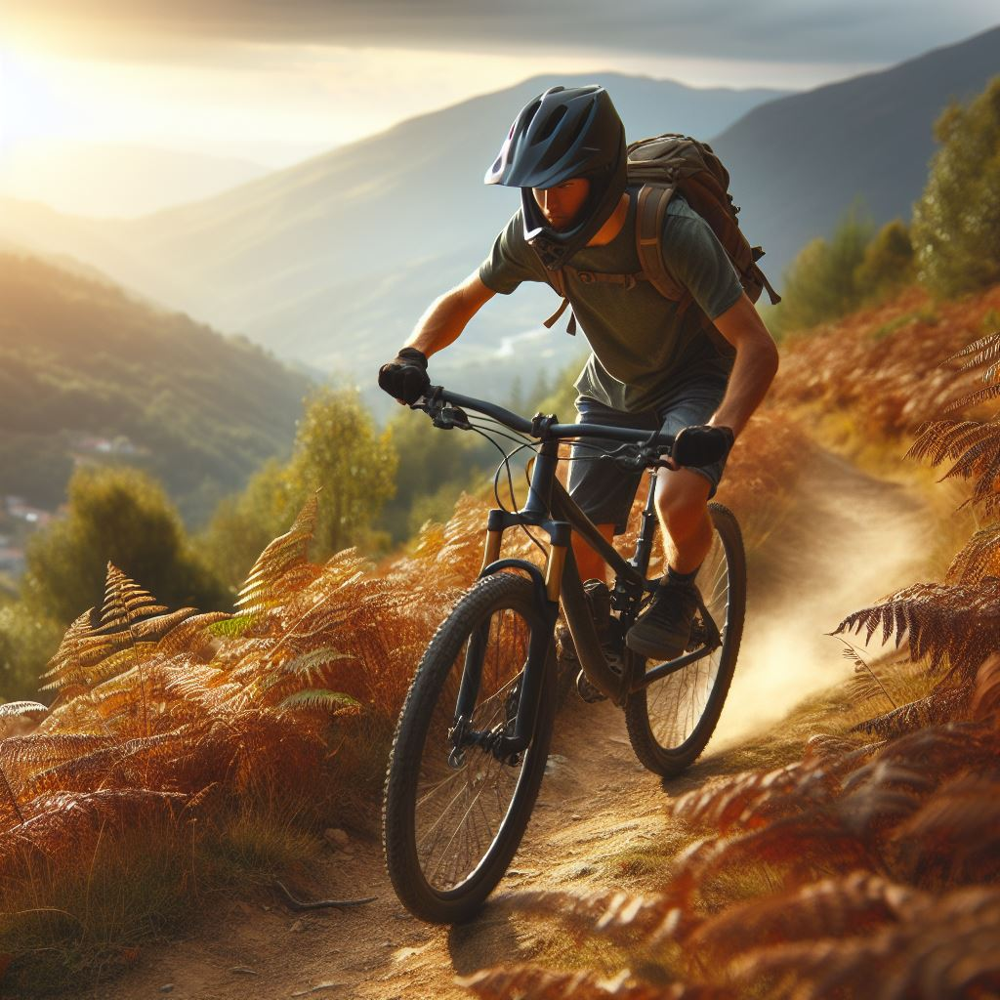

Mountain Bike Club
About Us
Ready to hit the trails or experience the thrill of downhill mountain bike racing? Check out our school mountain bike club! Whether you love adrenaline-fuelled sports or just want to get outdoors, join us on awesome rides through scenic landscapes. Whether you're a seasoned rider or just starting out, our club welcomes all skill levels. For competitive types, we also offer support for secondary school competition.
What We Do
- Race Events:
Participate in mountain bike races representing the school, either locally or regionally, including cross-country, enduro, downhill, or even cyclocross races. We also support you for national race meets.
- Weekend Rides:
We provide opportunities for members to experience different trails and terrains, both locally and on week trips further afield.
- Night Rides:
These happen during warmer months, providing a different experience and adding an extra challenge to familiar trails.
- Skill Competitions:
These are friendly competitions among club members, and may include time trials, hill climbs, or skill challenges.
Upcoming Events
- Crankworx Rotorua – 10 March to 17 March 20xx
- Saturday Ride – Woodhill, 3 April 20xx
- Secondary Schools Downhill Competition – 20 May to 25 May 20xx
Useful Links
Official website for Crankworx
Official website for Mountain Bike New Zealand